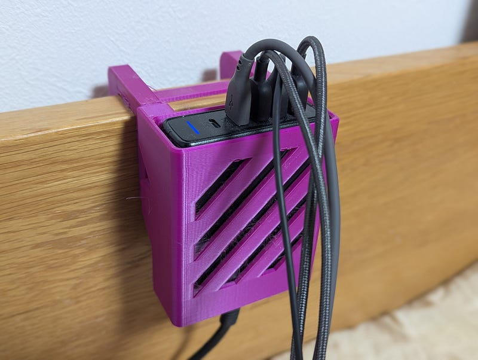
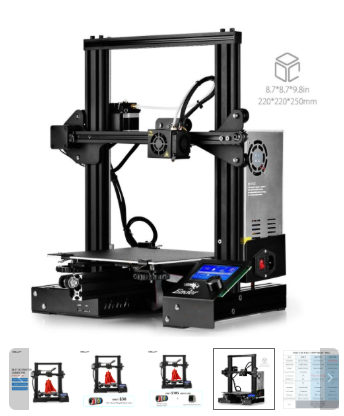
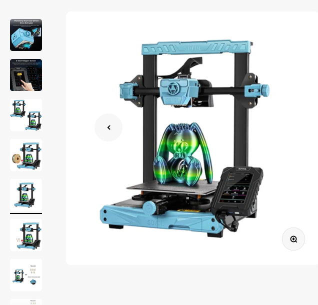
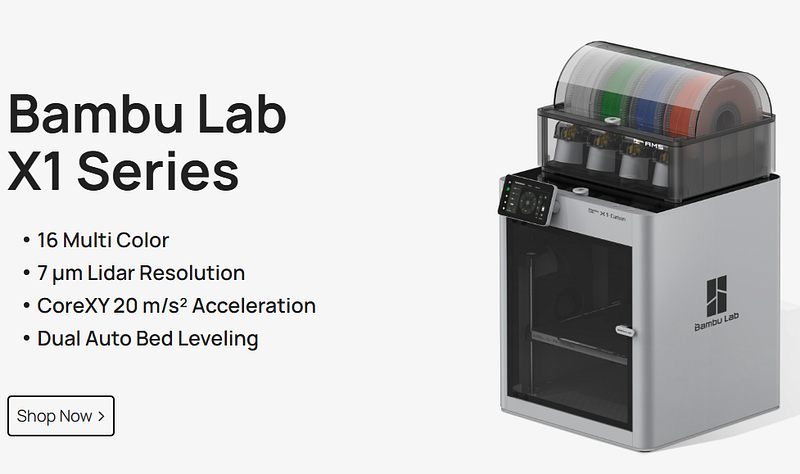
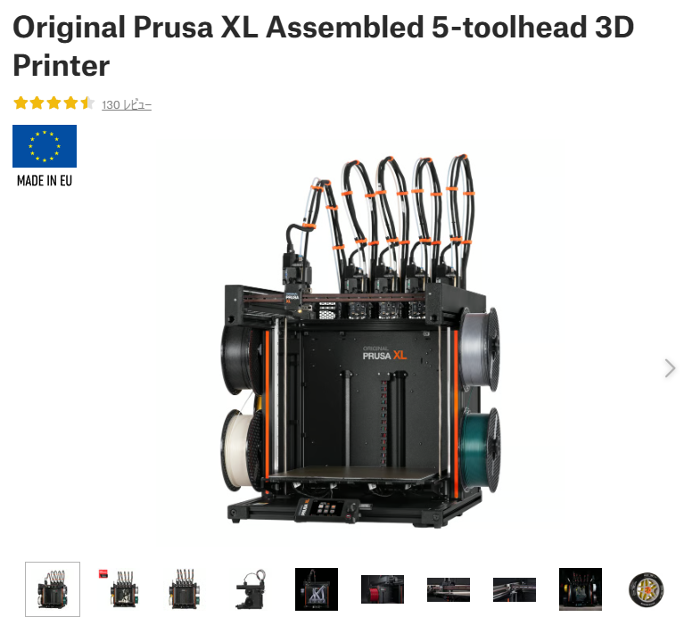
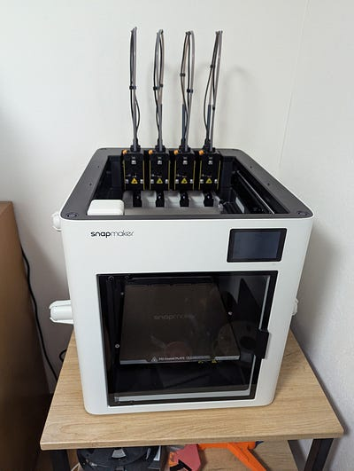
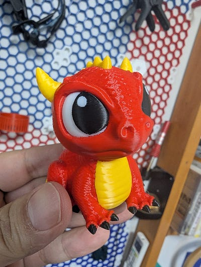
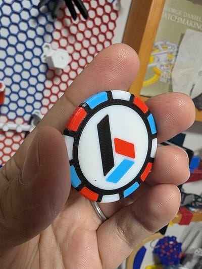
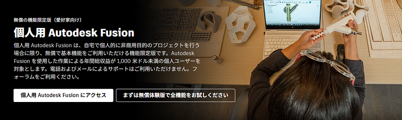

2026年は3Dプリンティングを始めよう！
2026年は3Dプリンティングを始めよう！
Snapmaker U1やBambu Lab製品に代表される最新の3Dプリンターは高機能かつ、それまででは考えられない価格になっており、3Dプリンティング入門はますます身近なものになってきています。私はもともとプログラマーですので、その方たちには今年こそぜひ3Dプリンティング入門をしてほしい！
なお本記事は一切アフィリエイトリンクを含んでいません。もしこの記事が参考になったのならGitHub Sponsorのほうで github.com/lestrrat-go/jwx の開発を支援していただけると大変ありがたいです！！
GitHub is where people build software. More than 150 million people use GitHub to discover, fork, and contribute to…github.com
もしくはぜひ今月30日にANDPAD様で開催する3Dプリンティングイベントにぜひいらしてください！ゲストはからくりすとさん！「初心者に優しい」3Dプリンティングイベントを目指しています！ぜひお早目にチケットを購入してください！
用語
- ヘッド — 3Dプリンター内のプラスチックを溶かし、素材を押し出す機材
- エクストルーダー — ヘッド内の、プラスチックを溶かして押し出す部品
- フィラメント — 3Dプリンターが使用するプラスチック。3Dプリンターはこれを溶かして所定の位置に設置する
- ベッドスリンガー — Y軸の動きをヘッドを動かすかわりに印刷物を固定する板（ベッド）を動かすことで実現する3Dプリンター
何故3Dプリンティングすべきか
おもしろいからです。
本当にそれだけなんですよね。プログラミングしているときに感じていた高揚感を改めて感じさせてくれる、実用性のあるもの自分の中からひねり出して、いい仕事したなーといい気分になれる。基本的にそれだけです。でも生きていく上で大切なのってこういう気持ちだと思うんですよね。
私は主に二つの目的で3Dプリンティングをしています。ひとつは物事の仕組みを知るため。例えばルービックキューブの仕組みを理解したり、手漕ぎサイレンの仕組みを知るために自分でデザインをしました（なお、私はモーターや基盤を組み合わせる系のものは個人的に興味がないだけで、多くの人がそれらを組み合わせて自動化・機械化されたツールを作っています）
もうひとつはちょっとした、でもピッタリのものを店舗で買うのはちょっと難しいようなものを自分の用途のためにカスタマイズして作る場合です。
例えば、私はAnkerの充電器をどうしても枕元に置いておきたいのですが、そのためにローテーブルを使いたくない。なのでベッドのヘッドボードにピッタリはまる形のものを作ってそこに充電器を入れています。あとは、Webカメラの位置を調整するためのアームを作ったり、3Dプリンターのフィラメントを設置する場所を変えるためにアタッチメントを作ったりしています。

最初に「おもしろいから」と書きましたが、創造力を使って自分の生活を豊かにできる、というのが大人っぽい言い方なのかもしれません。
最近の3Dプリンター事情
3Dプリンターというものが世間に認知され始めたころは、基本的にまだ3Dプリンターそのもの詳細な仕様を理解して自分で修理・改修できる必要がありました。
その後3Dプリンターはどんどん手軽になっていきましたし、その性能（印刷スピードと質）もあがりましたが、それでも私のようにハードウェアそのものに興味のない人間には敷居が高かった記憶があります。


それが2022年ごろから明らかにより一般消費者向けの製品が見受けられるようになります。もちろん一般向けといっても限度はありますが、それまでと比べると明らかに「ボタンを押せば」動く方向に製品がシフトしていきました。
この変革の代表的なメーカーがBambu Labsです。印刷の質が向上するだけでなく、Bambu Labsは(Automatic Material System) AMSという、フィラメントの供給をコントロールする製品をつなげられるようにしたことです。

それまで基本的に一度にひとつのフィラメントしか使用できなかったのが、このAMSを利用することで複数のフィラメントを使えるようにしてくれます。この機能の一番わかりやすい利用方法は複数色を使ったものを印刷することです。
AMSと対をなすのが複数ヘッドを有する3Dプリンターです。Bambu Lab製品をひとつのヘッドに対して挿入するフィラメントを変える手法を取りますが、複数ヘッドの場合はひとつのヘッドにひとつのフィラメントのまま、ヘッドをのものを印刷中に取り換えるという手法を取ります。

複数ヘッドのほうがフィラメントを取り換える速度が速い、無駄になるフィラメントが少ないなどの利点があるものの、問題は…高い！ヘッドは3Dプリンターの心臓とも言える部分のひとつなので、そう安くはないのは当然ですが、つらい。
これから始める人におすすめの3Dプリンター
さて、それでは今から始める人におすすめのプリンターはどれでしょう。ポイントは「扱いが簡単」「価格がお手頃」「印刷のスピード・質」のバランスです。質を求めれば高くなるのは当然ですが、実際にはそこまで高品質である必要はないです。拡張性を求めれば自分で手を入れないといけない部分も増えますが、そうそう拡張したいという人もいなければここも我慢できるところでしょう。
こういった条件を考えると今おすすめのプリンターは以下のあたりでしょう
Bambu Lab A1 Mini
Bambu LabA1 mini Combo マルチカラー印刷 Plug-N-Play アクティブ流量補正 全自動キャリブレーション アクティブモーターノイズキャンセリング 高速高精度 マルチカラー、だれでもできる 新しい AMS…jp.store.bambulab.com
30,000円を切る値段でこの品質はお買い得と言わざるをえないでしょう。比較までに似た構造（ベッドスリンガー）の別プリンターであるSovol SV07 は1ドル=150円換算で15,000円ですが、自動キャリブレーションができません。
ちなみに実はSV07 Maxは持っていたことがあるもののA1は所持したことはないので直接品質の比較はできませんが、他人の印刷物を見ている限りA1 Miniのほうが品質が高いように見えました。
値段、品質ともに絶妙なバランスを持った製品といえるでしょう。ただ、30,000円という値段はAMSを含まないので、複数素材での印刷を考える場合はもう30,000円予算に追加する必要があります。
Bambu Lab AMS lite マルチカラー/材料機能 フィラメントの自動バックアップ スプール互換性が向上 取付け簡単 RFIDフィラメント識別 誰でもマルチカラーで3Dプリント AMS…jp.store.bambulab.com
Snapmaker U1
The Snapmaker U1 is open for pre-order. Unlock cleaner, faster multi-color 3D printing with 5X speed, powered by a…shop.snapmaker.com
2025年後半にクラウドファンディングで旋風を起こした、複数（４）ヘッドのプリンターです。前述のとおり複数ヘッドを使うので早い！無駄が少ない！実は私も最近手に入れました。



お値段は日本円で約130,000円。安くはないですが、お値段だけの価値はある製品となっています。もし約150,000円の Bambu Lab P2S（AMSつき）あたりを検討されているなら、個人的にはフィラメントの無駄がすくないSnapmaker U1のほうをおします。AMSがいらないならP2Sは110,000円くらいのようですので、有りですが、そうしたらA1でもいいのでは…？という気もしています。
おまけ Prusa CORE One+ Bondtech INDX
やー、これはどういう製品なのかまだわかっていないので本気のおすすめではないのですが、Prusa CORE Oneにつけられる、エクストルーダーだけを交換するシステムです。最大８本までいけるみたいなので、ヘッドはひとつ、でもエクストルーダーを必要に応じて入れ替えて最大８個のフィラメントで印刷できる、というシステムですね。
CORE One+ は、最高のプリント品質とスピードを実現するために設計された、アクティブ温度制御を備えた完全密閉型のCoreXY…www.prusa3d.com
CORE Oneが約210,000円、そこにまだ価格未定のINDXがつくので、8個揃えたら300,000~400,000円するんじゃないだろうか…。おもしろそうですけど、今おすすめできるものではないですね。2026年Q1~Q2あたりにでまわるようです。
そうなんだけど、やっぱりデザイン
というわけで3Dプリンターはぐっと求めやすくなりました！昔の3Dプリンターは失敗も多かったけど、最近のはそうそう失敗しませんし、本当におすすめです。
ですが、ここで一つ問題が。プリンターを手に入れてなんでもプリントできるようになっても、実際何をプリントすればいいのか？
世の中にはThingiverse, Thangsなどの様々なデザイン・モデルを配布している場所があります。また、3Dプリンターを作っている会社が運営しているPrintablesやMakerWorldなどもあります。ですので、こういったところを検索すれば様々な3Dプリント可能なデザインが手に入ります。
フィギュアなどはこれら拾い物で問題ないことが多いですが、機能性を求めるモデルはやはり自分の環境に合わせて調整したいことが多いかと思います。そのような場合は既存のモデルを編集する、いくつかのパーツに分かれるようなものの場合は該当部品だけ自分で作る、はたまた全部最初からデザインするなどの追加作業が必要になります。その際、一切デザインができない、となるとせっかくの3Dプリンターを思う存分使えないことになりがちです。
そこで、ぜひFusionなどのCADないしBlenderなどの3Dモデル作成ソフトの使い方を学習しましょう！Fusionはお金を払ってほしくて導線をわかりにくくなっていますが、無償で使える個人ライセンスもあるのでそちらを安心して使うことができます。こちらのページの下のほうにいくと個人用のリンクが見つかるはずです。

使い方がわからない～という場合はぜひ私のgihyo.jpでの連載3DPジャングルをごらんください！また、前述のとおり、1月30日にANDPAD様で初心者に優しい3Dプリンティングイベントを開催しますので、ぜひぜひご来場ください！お待ちしております！